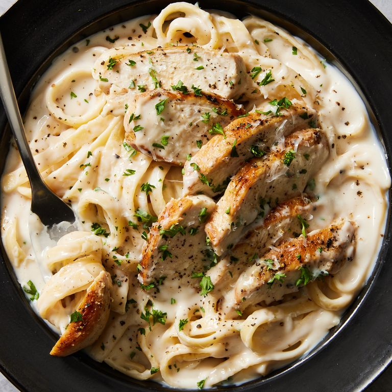

Chicken Alfredo

Description:
Begginer friendly chicken alfredo recipe, sure to make you feel fancy while you indulge in great taste.
Ingredients:
- 2 tablespoons extra-virgin olive oil
- 2 boneless skinless chicken breasts
- kosher salt
- freshly cracked black pepper
- 2 cups whole milk
- 2 cups low-sodium chicken broth
- 2 cloves garlic, minced
- 8 ounces fettuccine
- 1/2 cup heavy cream
- 1 cup freshly grated parmesan
- freshly chopped parsley for garnish optional
Steps
- In a large skillet over medium-high heat, heat oil.
- Add chicken and season with salt and pepper. Cook until golden and cooked through, about 8 minutes per side. rest 10 minutes then slice.
- Add milk, broth, and garlic to skillet. Season with salt and pepper and bring to a simmer.
- Add fettuccine, stirring frequently for about 3 minutes. Cook until al dente, about 8 minutes more.
- Stir in heavy cream and parmesan until combined, simmer until sauce thickens.
- Remove from heat and stir in sliced chicken. Garnish with parsly and indugle yourself in a great meal.